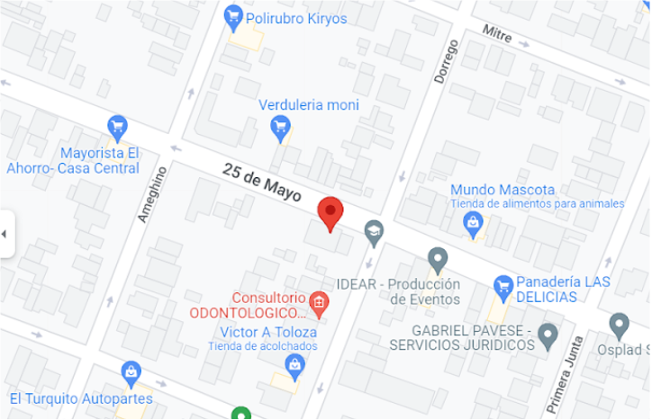

{% extends 'base.html' %}
{ %load static %}
{% block titulo %}NOSOTROS{% endblock titulo %}
{% block contenido %}
Como surge?
En la ciudad de Pcia. Roque Sáenz Peña se conforma en el año 2003 una Asociación Civil de padres con hijos con discapacidad y de la comunidad en general, con el objetivo de mejorar la calidad de vida de éstos.
Esta Asociación Civil, denominada “Juntos en Acción” entre otros aspectos a fortalecer se plantea la necesidad de contar en la localidad con un servicio que capacite a los jóvenes con discapacidad en un oficio o puesto de trabajo desarrollando sus potencialidades, obteniendo así una herramienta que les amplíe las posibilidades de inserción laboral y social.
Como antecedente de ello se puede mencionar la concreción del Centro de Capacitación Laboral como Proyecto Especial en el ámbito del Ministerio de Educación, Cultura, Ciencia y Tecnología de la Provincia. Para lo cual desde la Asociación se realizaron las gestiones administrativas, los contactos a nivel político y se puso a disposición los recursos materiales básicos para la puesta en marcha del servicio, teniendo como objetivo “Mejorar la calidad de formación de las personas con discapacidad especialmente a través del desarrollo de nuevas competencias y calificaciones profesionales”. El proyecto especial fue dado de baja el 29 de febrero por una Resolución de fecha 19 de marzo pero de alta el 1 de marzo hasta el 31 de diciembre de 2008.
En entrevistas realizadas durante el año 2005-2006 y 2007 a jóvenes con discapacidad y sus familias, la mayoría manifiesta el interés por recibir una capacitación y una posterior inserción en el mercado laboral, como así también un sentimiento de discriminación al no poder lograr, por sus propios medios, que la comunidad les de la oportunidad de desempeñarse en un oficio o puesto de trabajo.
Asimismo un alto porcentaje de padres de hijos con discapacidad, manifiesta entre sus expectativas la necesidad de que su hijo se inserte en el mercado laboral y la falta de un servicio que complemente la formación que brinda la Escuela de Educación Especial para que su hijo/a incorpore mediante las capacitaciones la mayor cantidad de herramientas posibles.
En este contexto, el problema se origina en la demanda de integración social y laboral por parte de personas con discapacidad y la escasa oferta de servicios que tiendan a satisfacerla, por lo que constituye una necesidad la concreción de un servicio que contemple acciones orientadas a fortalecer las posibilidades de inserción social y laboral.
Durante el año 2008 la Asociación gestionó y consiguió la habilitación, a partir del 02 de marzo de 2009, de la UEGP Nº 143 CENTRO DE FORMACION INTEGRAL. Actualmente su presidente es la Representante Legal de la UEGP.
Objetivos:
Misión y Visión:
Autoridades:
Lugar:

Información de Contacto:
{% endblock contenido %}